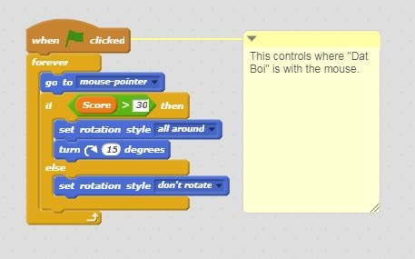

Scratch Project #1
From the start of the year, our computer science class has been working on
several projects on Scratch. One of the projects that I am extremely proud
of is the one that I and my partner, Pedro, worked on. The name of our game
is called Dat Boi Game but the game we created was a remix from a game
called "Save the MiniFigs".

This is how the start screen looks like when the green flag is pressed.
I know that is does not look impressive but it was one of the first projects
that I had to work with someone and do on my own.

The code on the top controls the sprite using the mouse. When the score reaches
thirty, the sprite begins to rotate around the mouse pointer. It was fun coding the game but some issues arose
when programming the part in which the sprite would revolve around the mouse.